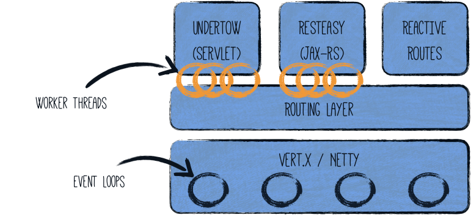
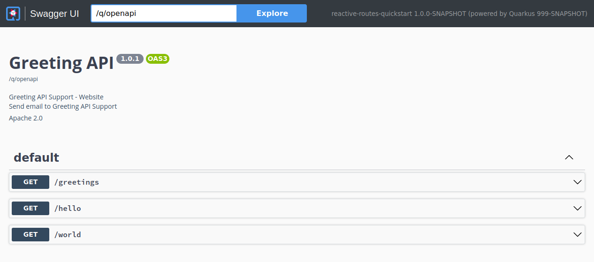

Reactive routes propose an alternative approach to implement HTTP endpoints where you declare and chain routes. This approach became very popular in the JavaScript world, with frameworks like Express.Js or Hapi. Quarkus also offers the possibility to use reactive routes. You can implement REST API with routes only or combine them with JAX-RS resources and servlets.
The code presented in this guide is available in this GitHub repository under the reactive-routes-quickstart directory
| Reactive Routes were initially introduced to provide a reactive execution model for HTTP APIs on top of the Quarkus Reactive Architecture. With the introduction of RESTEasy Reactive, you can now implement reactive HTTP APIs and still use JAX-RS annotations. Reactive Routes are still supported, especially if you want a more route-based approach, and something closer to the underlying reactive engine. |
Quarkus HTTP
Before going further, let’s have a look at the HTTP layer of Quarkus. Quarkus HTTP support is based on a non-blocking and reactive engine (Eclipse Vert.x and Netty). All the HTTP requests your application receive are handled by event loops (I/O Thread) and then are routed towards the code that manages the request. Depending on the destination, it can invoke the code managing the request on a worker thread (Servlet, Jax-RS) or use the IO Thread (reactive route). Note that because of this, a reactive route must be non-blocking or explicitly declare its blocking nature (which would result by being called on a worker thread).

See the Quarkus Reactive Architecture documentation for further details on this topic.
Declaring reactive routes
The first way to use reactive routes is to use the @Route annotation.
To have access to this annotation, you need to add the quarkus-reactive-routes extension:
In your build file, add:
<dependency>
<groupId>io.quarkus</groupId>
<artifactId>quarkus-reactive-routes</artifactId>
</dependency>implementation("io.quarkus:quarkus-reactive-routes")Then in a bean, you can use the @Route annotation as follows:
package org.acme.reactive.routes;
import io.quarkus.vertx.web.Route;
import io.quarkus.vertx.web.Route.HttpMethod;
import io.quarkus.vertx.web.RoutingExchange;
import io.vertx.ext.web.RoutingContext;
import javax.enterprise.context.ApplicationScoped;
@ApplicationScoped (1)
public class MyDeclarativeRoutes {
// neither path nor regex is set - match a path derived from the method name
@Route(methods = Route.HttpMethod.GET) (2)
void hello(RoutingContext rc) { (3)
rc.response().end("hello");
}
@Route(path = "/world")
String helloWorld() { (4)
return "Hello world!";
}
@Route(path = "/greetings", methods = Route.HttpMethod.GET)
void greetings(RoutingExchange ex) { (5)
ex.ok("hello " + ex.getParam("name").orElse("world"));
}
}| 1 | If there is a reactive route found on a class with no scope annotation then @javax.inject.Singleton is added automatically. |
| 2 | The @Route annotation indicates that the method is a reactive route. Again, by default, the code contained in the method must not block. |
| 3 | The method gets a RoutingContext as a parameter. From the RoutingContext you can retrieve the HTTP request (using request()) and write the response using response().end(…). |
| 4 | If the annotated method does not return void the arguments are optional. |
| 5 | RoutingExchange is a convenient wrapper of RoutingContext which provides some useful methods. |
More details about using the RoutingContext is available in the Vert.x Web documentation.
The @Route annotation allows you to configure:
-
The
path- for routing by path, using the Vert.x Web format -
The
regex- for routing with regular expressions, see for more details -
The
methods- the HTTP verb triggering the route such asGET,POST… -
The
type- it can be normal (non-blocking), blocking (method dispatched on a worker thread), or failure to indicate that this route is called on failures -
The
order- the order of the route when several routes are involved in handling the incoming request. Must be positive for regular user routes. -
The produced and consumed mime types using
produces, andconsumes
For instance, you can declare a blocking route as follows:
@Route(methods = HttpMethod.POST, path = "/post", type = Route.HandlerType.BLOCKING)
public void blocking(RoutingContext rc) {
// ...
}|
Alternatively, you can use When |
The @Route annotation is repeatable and so you can declare several routes for a single method:
@Route(path = "/first") (1)
@Route(path = "/second")
public void route(RoutingContext rc) {
// ...
}| 1 | Each route can use different paths, methods… |
If no content-type header is set then we will try to use the most acceptable content type as defined by io.vertx.ext.web.RoutingContext.getAcceptableContentType().
@Route(path = "/person", produces = "text/html") (1)
String person() {
// ...
}| 1 | If the accept header matches text/html we set the content type automatically. |
Handling conflicting routes
You may end up with multiple routes matching a given path.
In the following example, both route matches /accounts/me:
@Route(path = "/accounts/:id", methods = HttpMethod.GET)
void getAccount(RoutingContext ctx) {
...
}
@Route(path = "/accounts/me", methods = HttpMethod.GET)
void getCurrentUserAccount(RoutingContext ctx) {
...
}As a consequence, the result is not the expected one as the first route is called with the path parameter id set to me.
To avoid the conflict, use the order attribute:
@Route(path = "/accounts/:id", methods = HttpMethod.GET, order = 2)
void getAccount(RoutingContext ctx) {
...
}
@Route(path = "/accounts/me", methods = HttpMethod.GET, order = 1)
void getCurrentUserAccount(RoutingContext ctx) {
...
}By giving a lower order to the second route, it gets evaluated first. If the request path matches, it is invoked, otherwise the other routes are evaluated.
@RouteBase
This annotation can be used to configure some defaults for reactive routes declared on a class.
@RouteBase(path = "simple", produces = "text/plain") (1) (2)
public class SimpleRoutes {
@Route(path = "ping") // the final path is /simple/ping
void ping(RoutingContext rc) {
rc.response().end("pong");
}
}| 1 | The path value is used as a prefix for any route method declared on the class where Route#path() is used. |
| 2 | The value of produces() is used for content-based routing for all routes where Route#produces() is empty. |
Reactive Route Methods
A route method must be a non-private non-static method of a CDI bean.
If the annotated method returns void then it has to accept at least one argument - see the supported types below.
If the annotated method does not return void then the arguments are optional.
Methods that return void must end the response or the HTTP request to this route will never end.
Some methods of RoutingExchange do it for you, others not and you must call the end() method of the response by yourself, please refer to its JavaDoc for more information.
|
A route method can accept arguments of the following types:
-
io.vertx.ext.web.RoutingContext -
io.quarkus.vertx.web.RoutingExchange -
io.vertx.core.http.HttpServerRequest -
io.vertx.core.http.HttpServerResponse -
io.vertx.mutiny.core.http.HttpServerRequest -
io.vertx.mutiny.core.http.HttpServerResponse
Furthermore, it is possible to inject the HttpServerRequest parameters into a method parameter annotated with @io.quarkus.vertx.web.Param:
| Parameter Type | Obtained via |
|---|---|
|
|
|
|
|
|
@Route
String hello(@Param Optional<String> name) {
return "Hello " + name.orElse("world");
}The HttpServerRequest headers can be injected into a method parameter annotated with @io.quarkus.vertx.web.Header:
| Parameter Type | Obtained via |
|---|---|
|
|
|
|
|
|
@Route
String helloFromHeader(@Header("My-Header") String header) {
return header;
}The request body can be injected into a method parameter annotated with @io.quarkus.vertx.web.Body.
| Parameter Type | Obtained via |
|---|---|
|
|
|
|
|
|
|
|
any other type |
|
@Route(produces = "application/json")
Person createPerson(@Body Person person, @Param("id") Optional<String> primaryKey) {
person.setId(primaryKey.map(Integer::valueOf).orElse(42));
return person;
}A failure handler can declare a single method parameter whose type extends Throwable.
The type of the parameter is used to match the result of RoutingContext#failure().
@Route(type = HandlerType.FAILURE)
void unsupported(UnsupportedOperationException e, HttpServerResponse response) {
response.setStatusCode(501).end(e.getMessage());
}Returning Unis
In a reactive route, you can return a Uni directly:
@Route(path = "/hello")
Uni<String> hello(RoutingContext context) {
return Uni.createFrom().item("Hello world!");
}
@Route(path = "/person")
Uni<Person> getPerson(RoutingContext context) {
return Uni.createFrom().item(() -> new Person("neo", 12345));
}Returning Unis is convenient when using a reactive client:
@Route(path = "/mail")
Uni<Void> sendEmail(RoutingContext context) {
return mailer.send(...);
}The item produced by the returned Uni can be:
-
a string - written into the HTTP response directly
-
a buffer - written into the HTTP response directly
-
an object - written into the HTTP response after having been encoded into JSON. The
content-typeheader is set toapplication/jsonif not already set.
If the returned Uni produces a failure (or is null), an HTTP 500 response is written.
Returning a Uni<Void> produces a 204 response (no content).
Returning results
You can also return a result directly:
@Route(path = "/hello")
String helloSync(RoutingContext context) {
return "Hello world";
}Be aware, the processing must be non-blocking as reactive routes are invoked on the IO Thread.
Otherwise, set the type attribute of the @Route annotation to Route.HandlerType.BLOCKING, or use the @io.smallrye.common.annotation.Blocking annotation.
The method can return:
-
a string - written into the HTTP response directly
-
a buffer - written into the HTTP response directly
-
an object - written into the HTTP response after having been encoded into JSON. The
content-typeheader is set toapplication/jsonif not already set.
Returning Multis
A reactive route can return a Multi.
The items are written one by one, in the response.
The response Transfer-Encoding header is set to chunked.
@Route(path = "/hello")
Multi<String> hellos(RoutingContext context) {
return Multi.createFrom().items("hello", "world", "!"); (1)
}| 1 | Produces helloworld! |
The method can return:
-
a
Multi<String>- the items are written one by one (one per chunk) in the response. -
a
Multi<Buffer>- the buffers are written one by one (one per chunk) without any processing. -
a
Multi<Object>- the items are encoded to JSON written one by one in the response.
@Route(path = "/people")
Multi<Person> people(RoutingContext context) {
return Multi.createFrom().items(
new Person("superman", 1),
new Person("batman", 2),
new Person("spiderman", 3));
}The previous snippet produces:
{"name":"superman", "id": 1} // chunk 1
{"name":"batman", "id": 2} // chunk 2
{"name":"spiderman", "id": 3} // chunk 3Streaming JSON Array items
You can return a Multi to produce a JSON Array, where every item is an item from this array.
The response is written item by item to the client.
To do that set the produces attribute to "application/json" (or ReactiveRoutes.APPLICATION_JSON).
@Route(path = "/people", produces = ReactiveRoutes.APPLICATION_JSON)
Multi<Person> people(RoutingContext context) {
return Multi.createFrom().items(
new Person("superman", 1),
new Person("batman", 2),
new Person("spiderman", 3));
}The previous snippet produces:
[
{"name":"superman", "id": 1} // chunk 1
,{"name":"batman", "id": 2} // chunk 2
,{"name":"spiderman", "id": 3} // chunk 3
]
The produces attribute is an array.
When you pass a single value you can omit the "{" and "}".
Note that "application/json" must be the first value in the array.
|
Only Multi<String>, Multi<Object> and Multi<Void> can be written into the JSON Array.
Using a Multi<Void> produces an empty array.
You cannot use Multi<Buffer>.
If you need to use Buffer, transform the content into a JSON or String representation first.
|
Deprecation of
asJsonArrayThe |
Event Stream and Server-Sent Event support
You can return a Multi to produce an event source (stream of server sent events).
To enable this feature, set the produces attribute to "text/event-stream" (or ReactiveRoutes.EVENT_STREAM), such as in:
@Route(path = "/people", produces = ReactiveRoutes.EVENT_STREAM)
Multi<Person> people(RoutingContext context) {
return Multi.createFrom().items(
new Person("superman", 1),
new Person("batman", 2),
new Person("spiderman", 3));
}This method would produce:
data: {"name":"superman", "id": 1}
id: 0
data: {"name":"batman", "id": 2}
id: 1
data: {"name":"spiderman", "id": 3}
id: 2
The produces attribute is an array.
When you pass a single value you can omit the "{" and "}".
Note that "text/event-stream" must be the first value in the array.
|
You can also implement the io.quarkus.vertx.web.ReactiveRoutes.ServerSentEvent interface to customize the event and id section of the server sent event:
class PersonEvent implements ReactiveRoutes.ServerSentEvent<Person> {
public String name;
public int id;
public PersonEvent(String name, int id) {
this.name = name;
this.id = id;
}
@Override
public Person data() {
return new Person(name, id); // Will be JSON encoded
}
@Override
public long id() {
return id;
}
@Override
public String event() {
return "person";
}
}Using a Multi<PersonEvent> would produce:
event: person
data: {"name":"superman", "id": 1}
id: 1
event: person
data: {"name":"batman", "id": 2}
id: 2
event: person
data: {"name":"spiderman", "id": 3}
id: 3|
Deprecation of
asEventStreamThe |
Json Stream in NDJSON format
You can return a Multi to produce a newline delimited stream of JSON values.
To enable this feature, set the produces attribute of the @Route annotation to "application/x-ndjson" (or ReactiveRoutes.ND_JSON):
@Route(path = "/people", produces = ReactiveRoutes.ND_JSON)
Multi<Person> people(RoutingContext context) {
return ReactiveRoutes.asJsonStream(Multi.createFrom().items(
new Person("superman", 1),
new Person("batman", 2),
new Person("spiderman", 3)
));
}This method would produce:
{"name":"superman", "id": 1}
{"name":"batman", "id": 2}
{"name":"spiderman", "id": 3}
The produces attribute is an array. When you pass a single value you can omit the "{" and "}".
Note that "application/x-ndjson" must be the first value in the array.
|
You can also provide strings instead of Objects, in that case the strings will be wrapped in quotes to become valid JSON values:
@Route(path = "/people", produces = ReactiveRoutes.ND_JSON)
Multi<Person> people(RoutingContext context) {
return ReactiveRoutes.asJsonStream(Multi.createFrom().items(
"superman",
"batman",
"spiderman"
));
}"superman"
"batman"
"spiderman"|
Deprecation of
asJsonStreamThe |
Using Bean Validation
You can combine reactive routes and Bean Validation.
First, don’t forget to add the quarkus-hibernate-validator extension to your project.
Then, you can add constraints to your route parameter (annotated with @Param or @Body):
@Route(produces = "application/json")
Person createPerson(@Body @Valid Person person, @NonNull @Param("id") String primaryKey) {
// ...
}If the parameters do not pass the tests, it returns an HTTP 400 response. If the request accepts JSON payload, the response follows the Problem format.
When returning an object or a Uni, you can also use the @Valid annotation:
@Route(...)
@Valid Uni<Person> createPerson(@Body @Valid Person person, @NonNull @Param("id") String primaryKey) {
// ...
}If the item produced by the route does not pass the validation, it returns a HTTP 500 response. If the request accepts JSON payload, the response follows the Problem format.
Note that only @Valid is supported on the return type.
The returned class can use any constraint.
In the case of Uni, it checks the item produced asynchronously.
Using the Vert.x Web Router
You can also register your route directly on the HTTP routing layer by registering routes directly on the Router object.
To retrieve the Router instance at startup:
public void init(@Observes Router router) {
router.get("/my-route").handler(rc -> rc.response().end("Hello from my route"));
}Check the Vert.x Web documentation to know more about the route registration, options, and available handlers.
|
|
You can also receive the Mutiny variant of the Router (io.vertx.mutiny.ext.web.Router):
public void init(@Observes io.vertx.mutiny.ext.web.Router router) {
router.get("/my-route").handler(rc -> rc.response().endAndForget("Hello from my route"));
}Intercepting HTTP requests
You can also register filters that would intercept incoming HTTP requests. Note that these filters are also applied for servlets, JAX-RS resources, and reactive routes.
For example, the following code snippet registers a filter adding an HTTP header:
package org.acme.reactive.routes;
import io.vertx.ext.web.RoutingContext;
public class MyFilters {
@RouteFilter(100) (1)
void myFilter(RoutingContext rc) {
rc.response().putHeader("X-Header", "intercepting the request");
rc.next(); (2)
}
}| 1 | The RouteFilter#value() defines the priority used to sort the filters - filters with higher priority are called first. |
| 2 | The filter is likely required to call the next() method to continue the chain. |
Adding OpenAPI and Swagger UI
You can add support for OpenAPI and Swagger UI by using the quarkus-smallrye-openapi extension.
Add the extension by running this command:
quarkus extension add 'quarkus-smallrye-openapi'./mvnw quarkus:add-extension -Dextensions="quarkus-smallrye-openapi"./gradlew addExtension --extensions="quarkus-smallrye-openapi"This will add the following to your build file:
<dependency>
<groupId>io.quarkus</groupId>
<artifactId>quarkus-smallrye-openapi</artifactId>
</dependency>implementation("io.quarkus:quarkus-smallrye-openapi")This is enough to generate a basic OpenAPI schema document from your Vert.x Routes:
curl http://localhost:8080/q/openapiYou will see the generated OpenAPI schema document:
---
openapi: 3.0.3
info:
title: Generated API
version: "1.0"
paths:
/greetings:
get:
responses:
"204":
description: No Content
/hello:
get:
responses:
"204":
description: No Content
/world:
get:
responses:
"200":
description: OK
content:
'*/*':
schema:
type: stringAlso see the OpenAPI Guide.
Adding MicroProfile OpenAPI Annotations
You can use MicroProfile OpenAPI to better document your schema,
example, adding header info, or specifying the return type on void methods might be usefull :
@OpenAPIDefinition( (1)
info = @Info(
title="Greeting API",
version = "1.0.1",
contact = @Contact(
name = "Greeting API Support",
url = "http://exampleurl.com/contact",
email = "techsupport@example.com"),
license = @License(
name = "Apache 2.0",
url = "https://www.apache.org/licenses/LICENSE-2.0.html"))
)
@ApplicationScoped
public class MyDeclarativeRoutes {
// neither path nor regex is set - match a path derived from the method name
@Route(methods = Route.HttpMethod.GET)
@APIResponse(responseCode="200",
description="Say hello",
content=@Content(mediaType="application/json", schema=@Schema(type=SchemaType.STRING))) (2)
void hello(RoutingContext rc) {
rc.response().end("hello");
}
@Route(path = "/world")
String helloWorld() {
return "Hello world!";
}
@Route(path = "/greetings", methods = HttpMethod.GET)
@APIResponse(responseCode="200",
description="Greeting",
content=@Content(mediaType="application/json", schema=@Schema(type=SchemaType.STRING)))
void greetings(RoutingExchange ex) {
ex.ok("hello " + ex.getParam("name").orElse("world"));
}
}| 1 | Header information about your API. |
| 2 | Defining the response |
This will generate this OpenAPI schema:
---
openapi: 3.0.3
info:
title: Greeting API
contact:
name: Greeting API Support
url: http://exampleurl.com/contact
email: techsupport@example.com
license:
name: Apache 2.0
url: https://www.apache.org/licenses/LICENSE-2.0.html
version: 1.0.1
paths:
/greetings:
get:
responses:
"200":
description: Greeting
content:
application/json:
schema:
type: string
/hello:
get:
responses:
"200":
description: Say hello
content:
application/json:
schema:
type: string
/world:
get:
responses:
"200":
description: OK
content:
'*/*':
schema:
type: stringUsing Swagger UI
Swagger UI is included by default when running in dev or test mode, and can optionally added to prod mode.
See the Swagger UI Guide for more details.
Navigate to localhost:8080/q/swagger-ui/ and you will see the Swagger UI screen:
